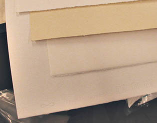

Situer le papier par rapport à des supports semblables
Le papier que nous connaissons habituellement est à distinguer du
papyrus, du liber et
du parchemin car d'une part sa base est le
bois, d'autre part il n'est pas tissé et il suppose la préparation d'une pâte. Il fut inventé,
dit-on, en 105 AC par le Chinois T'sai Louen, qui, observant la
construction d'un nid de guêpes, eut l'idée (c'est ce que dit la légende) d'employer les fibres de mûrier
et de bambou pour créer une pâte à faire sécher.
Au Laos, c'est de l'écorce du mûrier dont on se sert - encore de nos jours
- pour fabriquer une pâte dans laquelle on incruste des pétales et des
feuilles. Au Népal, le daphné canabina sert de base pour des fabrications
assez comparables. Ces fabrications non dépourvues d'éléments décoratifs ne sont pas rares dans
différentes régions d'Asie.
Le
transfert de connaissances, la fabrication
1276. Le premier moulin à papier d'Europe est créé à Fabriano près d'Ancône, Italie,
un haut lieu de cette industrie encore de nos jours. On cite ici et là d'autres
dates, fort proches, pour ce même événement : 1264 et 1268.
Nous avons choisi la moins optimiste mais peu importe : rapidement, naissent des moulins espagnols, français
et italiens autour de 1300.
L'invention a pu être selon les uns amenée en Europe par Marco Polo (sur
cette thèse on lira une
page
en italien sur le site du Museo della carta de Fabriano mais la date du retour
du grand voyageur, en principe 1295, semble a priori incompatible avec
celles qui sont avancées pour la création du moulin de Fabriano). Selon les
autres elle fut prise à des artisans chinois du Turkestan par les conquérant de
Samarkand en 751 et convoyées en Europe au fil d'un très long parcours dans le
monde musulman (passant notamment par l'Espagne).
Quoiqu'il en soit, il semblerai que les papetiers chinois auraient bien gardé
le secret la fabrication du papier durant plusieurs siècles. Une pratique du
secret commercial qui ne serait pas isolée : on peut citer en Chine la soie ou
en Europe le rouge d'Andrinople pour
prendre des exemples célèbres. Ceci pourrait expliquer pourquoi le voyage du
papier de la Chine à l'Ouest du continent aurait duré rien moins que
onze ou douze siècles (information non
confirmée).
Le papier le plus "classique" en Occident
est au départ (en principe, toutes sortes de procédés ayant été développés) une
pâte à base de chiffon soit le plus souvent du coton, ou plus rarement du
lin, mêlée de colle et mariné dans l'eau. Le papier
recyclé d'aujourd'hui se produit de la même manière (on substitue du vieux
papier au chiffon). Des substances végétales extrêmement nombreuses, voire même
animales, peuvent être utilisées en théorie. Cependant, les résines brutes étant généralement
acides, on remarque que ce sont les papiers "chiffons" qui sont naturellement les
plus neutres ou les plus alcalins. Des procédés contemporains de plus en plus
répandus permettent cependant de rectifier les charges électrochimiques.
Pour obtenir un grain, on applique la "pâte à papier" sur une
forme, composée d'une trame métallique
normalement adjointe de
phosphore, afin
d'éviter toute oxydation intempestive. La forme d'un papier, fruit de
longues recherches, est une
oeuvre de grande valeur car elle définit le grain en fonction de besoins
artistiques.
Le grammage est un concept simple, totalement indépendant du
grain : c'est le poids d'une feuille d'un mètre carré. L'épaisseur peut avoir
un lien avec le grammage, mais aussi avec la densité, généralement d'autant
plus grande que la pâte est chargée de colles ou comprimée (cartons).
La composition et les
invariants
Le papier - et même le
papyrus éponyme -, c'est TOUJOURS un amalgame fondamentalement cellulosique
(ce qui le distingue du parchemin, d'origine
animale). L'adjonction de composants acryliques, micacés ou autres ne change
rien à cette base dont les réactivités les plus sensibles pour l'utilisateur
sont invariablement :
* l'inflammabilité. Combien d'incendies à
cause du papier ?
*
l'hygroscopie. Sous l'effet de l'eau, le
papier tend normalement à redevenir une pâte.
La
teinte du papier dit "blanc"
C'est un motif de
tricherie autant qu'un sujet de controverses ayant des ramifications
sociopolitiques.
La tricherie, ce sont les azurants optiques. Il
est aujourd'hui aisé de dissimuler un jaunissement, conséquence d'acidité, en ajoutant à
une pâte de mauvaise qualité un colorant bleu-violet. Certains fabricants proposant par
ailleurs de bons produits n'hésitent pas à recourir à cet expédient pour
leurs "entrées de gammes". D'autres semblent intégralement spécialisés dans cette
pratique. Si un papier "blanc" vous semble étrangement bleuté ou violacé, cela
peut être légitimement un motif de questionnement sur son acidité
éventuelle.
Il y a bien pire : certains fabricants recourant à une main d'oeuvre du
tiers-monde, traiteraient leurs pâtes à papier au chlore pour les
blanchir (voir Chlore in
Blancs synthétiques) dans des conditions sanitaires et environnementales
parfois exécrables.
L'eau oxygénée est évoquée également - comme étant d'un emploi majeur -
mais nous ne disposons pas pour le moment de documents réellement
référentiels confirmant ou détaillant sérieusement cet usage industriel.
Merci de bien vouloir nous communiquer toute information recoupée à ce
sujet.
Par contre, différents papiers d'excellente qualité sont naturellement un peu
jaunes (lavis Vinci, Arches). Ceux-là ne jauniront pas
davantage. Un papier jaunâtre n'est absolument pas nécessairement de mauvaise
qualité.
C'est en partie le collage du papier qui est en question dans
cette problématique.
Le papier
et la colle
Certains papiers sont dépourvus ou très
peu chargés de colle, au
moins sur une face :
* les papiers japonais (au moins une face sans colle ni résine), de
grammage très léger,
* le papier buvard, de grammage assez important
* le "papier restauration", extrêmement fin.
Ils sont effectivement tous trois employés notamment en restauration, car
neutres chimiquement.
Mais la plupart des papiers sont adjoints de colles de type gélatine
(papiers traditionnels, parchemins) ou de poix-résine (acide), de
résines synthétiques (solution courante) et parfois de résines
végétales incluses naturellement dans la pâte (papiers népalais, etc.). Le collage
à la colophane (1850) induisait une forte acidité.
Les fonctions des colles (ou résines) sont
* l'apport de résistance
* l'évitement ou la maîtrise de l'effet buvard.
Précisément, ce qui définit l'aspect de la plupart des papiers, c'est la localisation de la colle :
* homogène jusqu'en surface : papiers
lisses
* seulement "à coeur" : papiers poreux en surface
* sur une seule face, comme certains papiers japonais.
Le dessin à sec nécessite généralement mais pas systématiquement une surface poreuse accrochant bien le
fusain,
les pastels ou le crayon
graphite. Les techniques humides se marient bien avec les papiers poreux
mais les effets obtenus sur des papiers moins poreux peuvent être aussi
intéressants. Et de toute façon un
enduction, modifiant radicalement ces propriétés des
papiers, est toujours envisageable.
Les papiers
apprêtés
Certes, le terme de "papiers apprêtés" est un peu vague. Nous
l'associons grosso modo à une enduction préalable à un emploi bien
spécifique, par opposition à une finition comme celle que subissent certains
papiers décoratifs, et aussi par opposition aux papiers dont tout le processus
de fabrication est consacré à la préparation à un usage spécifique (le
papier aquarelle, par exemple).
La liste qui suit est appelée à s'allonger progressivement :
* les papiers destinés à l'écriture. On citera
pour exemple - parmi tant d'autres - le remarquable Vélin velouté
Clairefontaine ® (90 gr.), réputé pour cette application. Dès la
naissance du papier, il apparut qu'il fallait un groupe de produits bien dédiés
à l'écriture, bien distinct des feuilles et rouleaux à vocations artistiques ou
pratiques. Certains exercices artistiques peuvent cependant tirer parti des
spécificités des papiers conçus pour l'écriture.
* les papiers pour le feutre ("layout"), dotés d'une
"barrière chimique" interdisant la traversée des encres tout en
autorisant par leur transparence un travail de calque. Leur grammage
avoisine 70 g/m2
* les papiers et transparents destinés à l'impression, à la reproduction laser ou jet
d'encre. Ce sont les "papiers couchés".
* les papiers pré-enduits destinés aux peintures
à l'huile et acrylique (papier toilé).
Certains ont un grain imitant la trame d'une toile
* les papiers paraffinés
comme le papier cristal.
Ils servent souvent à protéger les oeuvres réalisées au fusain, aux
pastels secs et autres techniques pulvérulentes ou légèrement grasses
comme par exemple le graphite
* les cartes à gratter,
couvertes d'une couche grattable blanche (parfois à base de kaolin)
et éventuellement d'une fine surcouche noire (carte à gratter noire)
* les papiers grattables,
souvent utilisés par les illustrateurs travaillant à l'aérographe. Ces
papiers sont de plus en plus rares sur le marché.
L'enduction du papier
Théoriquement elle n'est nécessaire que si l'on souhaite détourner un
papier de son usage normal car tout papier est d'emblée encollé d'une manière
raisonnée. Parfois c'est pour le protéger qu'il faut l'enduire, par exemple dans
le cas de certains krafts ou cartons qui ne
sont pas conçus pour durer.
Mais très typiquement, c'est lorsque l'on veut appliquer de la peinture à
l'huile qu'il faut enduire le papier car celui-ci ne supporte guère les corps
gras : cela fait des taches et il existe dans certains cas un risque de
saponification. On peut utiliser un enduit
traditionnel de type gélatine (colle
de peau par exemple) mais n'est-ce pas d'une certaine manière créer une
redondance avec la colle que contient le papier ? De plus l'application n'est
pas des plus simples.
Une enduction moderne, à l'aide de liant acrylique
ou vinylique, semble plus adaptée aux cas courants.
Dans tous les cas il faut veiller à ne pas utiliser une brosse trop grossière
qui laisserait des reliefs beaucoup plus visibles que sur une toile.
Éventuellement délayer l'enduit plus que pour une toile et travailler en deux
couches. L'enduction recto-verso est souhaitable tant pour la protection du
support que pour éviter les problèmes de tension. Elle est inutile pour les
pochades et autres petits essais.
Une autre possibilité est d'huiler le papier. Cette pratique n'est absolument
pas à déconseiller malgré les on-dit tout à fait erronés.
Cennini la recommandait pour réaliser des
calques et beaucoup de peintres
l'ont appliquée (certains allant même jusqu'à réaliser non seulement l'enduction
mais aussi les gessos à l'huile). Un papier
épais ne donne évidemment pas de transparences. Il s'assombrit seulement.
Il faut veiller à ce que le papier ne soit pas alcalin
car il altèrerait l'huile par saponification.
Le papier huilé est un bon support mais le défaut majeur du procédé est la
durée du séchage, considérable.
Pour le maroufler, une
colle polyacrylique est
presque indispensable.
___
(1)
Certes la toile a été utilisée très tôt comme support (assez mineur) pour
l'écriture et le dessin, mais force est de constater qu'elle ne fut utilisée
massivement que beaucoup plus tard. Lire l'introduction de l'article/tête de
section Les toiles.
Retour
début de page